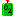

Commodities
Commodities are the basis for the entire economic system in Shores of Hazeron. All man-made objects are constructed or manufactured using commodities, including buildings, vehicles and spacecraft.
- Buildings are constructed using commodities.
- Buildings use commodities in their manufacturing processes.
- Spacecraft and vehicles are manufactured using commodities.
- Commodities are needed for fuel, ammunition, and repairs to buildings, vehicles, and spacecraft.
- Player characters and citizen populations eat and drink food commodities to stay alive. People consume Air in harsh environments.
Commodities are manufactured from other commodities or they are acquired from the environment. The chain of all commodity production begins with raw materials from the environment.
Commodities have condition factors. The maximum condition of a commodity is a measure of its overall durability; a commodity with a high maximum condition takes longer to wear out than a commodity with a low maximum condition. The current condition of a commodity is an indication of its state of repair. As a commodity wears down, its current condition is reduced. A commodity can be repaired before the current condition reaches zero, raising the current condition back to the maximum. When the current condition reaches zero, the commodity is irreparably broken and removed from play.
Commodities have a quality factor. The quality of environmental commodities is uniform across each planet. For example, the quality of stone does not vary no matter where mines are built on the same planet; however, the quality of stone will likely be different on another planet. The quality of manufactured commodities is based on the average of the qualities of the commodities consumed by the process. When calculating the average, Farming processes include an additional quality factor that is determined by the planet; the planet provides a quality factor for each different farming commodity that can be produced. For example, when growing grapes, the quality of the resulting grapes is based on the quality of the water, the sunlight, and a planet-wide grape quality factor. Consequently different farm products are not the same quality; grapes will have a different quality than vegetables, beans or fruit. If the quality was based only on sunlight and water, all produce from the same planet would be the same quality. The quality factor of all commodities ranges from 1 to 255, with 255 the best and 1 the worst.
The quality determines the rate of failure of the commodity when it is used. A low quality tool will wear out faster than a good quality tool. Commodities may fail when fetched from the city's inventory for construction or manufacturing. Each commodity that fails adds one unit of labor to the process before disintegrating.
The quality affects the value of a commodity. Higher quality commodities are more expensive than lower quality commodities. When selling cargo, a prospective city might not be interested in buying low quality merchandise but will usually offer a high price for good quality merchandise.
Technology objects raise the tech level of a building. Technology made in your empire will raise a building up to the tech level of the technology. Technology made in another empire will only raise a building by one tech level, regardless of how much the technology object exceeds the tech level of the building. A technology object will never lower the tech level of a building.
Upgrade modules affect systems of spacecraft. An upgrade module may change the type of a system. e.g. A cloaking shield upgrade will change an energy shield into a cloaking shield; an atmosphere collector bay upgrade will change the type of a weapon bay. Upgrade modules may also change the tech level of a spacecraft system.
| Icon | Commodity | Made By | TL | Notes |
|---|---|---|---|---|
|  | Air | Refinery Spacecraft Atmosphere Collector |
1 | Purified air ready to breathe. This is a mixture, not pure oxygen. |
| Aircraft Technology | Aircraft Factor University |
1 | ||
| Airport Repair Shop Technology | Airport Repair Shop University |
1 | ||
| Airport Terminal Technology | Airport Terminal University |
1 | ||
| Animal Carcass | Farm | 1 | An animal that is no longer alive. | |
| Animal Meat | Meat Processing Plant | 1 | Beef--It's what's for dinner. | |
| Antidote | Pharmaceutical Lab | 1 | Cures desease. | |
| Antiflux Particles | Spacecraft Particle Collector Bay | 28 | Solar particles collected from eddies in the rocky rings around planets using particle collector bays on spacecraft. Prevalence decreases as orbit zone gets colder. | |
| Antitoxin | Pharmaceutical Lab | 1 | Cures disease. | |
| Apartment Technology | Apartment University |
1 | ||
| APC - Armored Personnel Carrier | Vehicle Factory | 1 | ||
| Arena Technology | Arena University |
1 | ||
| Armorer Technology | Armorer University | 1 | ||
| Atmosphere Condenser Bay Module | Airport Repair Shop | 6 | Harvests air, cryozine, hydrogen, and ioplasma from the atmospheres of planets. | |
| Atmosphere Density | Atmosphere Density of Inner, Habitable of Outer World | 1 | Environmental factor that cannot actually be possessed. Used by manufacturing processes that acquire atmosphere from the environment, such as purification of Air or extraction of Hydrogen from the atmosphere. | |
| Backpack | Clothing Factory | 1 | This handy container hold items in a grid that is 6x8 grid squares. | |
| Bakery Technology | Bakery University |
1 | ||
| Bank Technology | Bank University |
1 | ||
| Beam Laser Bay Module | Airport Repair Shop | 5 | ||
| Bream Laser Turrent Module | Airport Repair Shop | 1 | ||
| Beans | Farm | 1 | Beans--the magical fruit. | |
| Beer | Brewery | 1 | Where man goes, so goes beer. | |
| Blank Disk | Electronics Factory | 1 | Don't Copy that Floppy! | |
| Bolite | Mine Spacecraft Mineral Collector |
25 | A naturally occurring Bose-Einstein Condensate. Can be mined in extremely cold environments. | |
| Bomb | Munitions Factory | 1 | Component of Large Rockets and Large Missiles. Can directly be used as a remotely detonated device. Capabilities of bombs vary depending upon the specialization and tech level of the Munitions Factory. | |
| Bone | Meat Processing Plant | 1 | He just couldn't handle the meat... | |
| Borexino Preciptate | Spacecraft Particle Collector Bay | 30 | A component of the coronal ejecta of stars. Borexino particles precipitate in the high density atmospheres of gas giants. Can only be collected by spacecraft equipped with particle collector bays. Prevalence increases as stellar current increases. i.e. most prevalent around type O stars and least prevalent around type M stars. | |
| Bread | Baker | 1 | ||
| Brewery Technology | Brewery University |
1 | ||
| Broker Technology | Broker University |
1 | ||
| Building Design Disk | Design Studio by Purchase or Burn of Design Disk | 1 | Stores a builiding design. Use it when planning a new building. Also use it to publish your designs in other empires by selling it at their design studios. | |
| Building Design Drawing | Design Studio by Purchase or Burn of Design Drawing | 1 | Stores a builiding design. Use it when planning a new building. Also use it to publish your designs in other empires by selling it at their design studios. | |
| Candy | Bakery | 1 | "Enough Chit-Chat... Time is Candy!" | |
| Cannon Bay Module | Airport Repair Shop | 2 | ||
| Cantina Technology | Cantina University |
1 | ||
| Capitol Technology | Capitol University |
1 | ||
| Carpenter Technology | Carpenter University |
1 | ||
| Casino Technology | Casino University |
1 | ||
| Cheese | Farm | 1 | Don't forget the cheese. | |
| Church Technology | Church University |
1 | What is Targoss??? | |
| Clamp | Machine Shop Plastics Factory |
1 | Tool for working with Cryo Heat Sinks. Needed to repair Cryo Heat Sink damage to spacecraft systems. | |
| Cloaking Shield Module | Airport Repair Shop | 25 | ||
| Clothing Factory Technology | Clothing Factory University |
1 | ||
| Coal | Mine Spacecraft Mineral Collector |
1 | ||
| Coal Power Plant Technology | Coal Power Plant University |
1 | ||
| Command and Control Module | Airport Repair Shop | 1 | ||
| Commercial Ship | Ship Yard | 1 | ||
| Computer | Computer Factory | 1 | When you start manufacturing computers, be prepared to make a lot of them. Most manufacturing and construction processes benefit from computers but few require them. A big city will soak up a lot of computers due to routine usage. | |
| Computer Factory Technology | Computer Factory University |
1 | ||
| Condominium Technology | Condominiom University |
1 | ||
| Crate | Carpenter Plastics Factory |
1 | The largest container a person can carry. The size exactly matches the maximum size object that will fit into a person's back and hand locations. A person can carry three crates at once but they might not be strong enough to move if the crates are full. | |
| Cronodollars | Machine Shop | 1 | Cronodollars are manufactured from metal, magmium or vulcium. Cronodollars are the default commodity for trade. They are money. | |
| Cryo Heat Sink | Machine Shop | 4 | Heat dissipation component of Power Armor, spacecraft Weapon systems, and spacecraft Shields. Manufactured using Cryozine. | |
| Cryozine | Refinery Spacecraft Atmosphere Collector |
4 | Toxic compound filtered from extremely cold atmospheres. | |
| Crystal Necklace | Jeweler | 1 | ||
| Crystals | Mine Spacecraft Mineral Collector |
1 | Can be mined on every world. Always present in the environment. | |
| Cybernetics Medical Module | Airport Repair Shop | 22 | Performs cybernetic modifications to people and other creatures. | |
| Design Studio Technology | Design Studio University |
1 | ||
| Distillery Technology | Distillery University |
1 | ||
| DNA Sample | DNA Sample Kit | 1 | Contains a DNA sample that has been collected using a DNA Sample Kit. The DNA Sample Kit turns into a DNA Sample when it is used. | |
| DNA Sample Kit | Pharmaceutical Lab | 1 | Collects a DNA sample from a living creature or from an animal carcass. | |
| Dynamite | Munitions Factory | 1 | Useful when mining. Component of Bombs, Small rockets and Small Missiles. Can directly be used as a time-delay fuse device. Capabilities of explosives vary depending upon the specialization and tech level of the Munitions Factory. | |
| Eggs | Farm | 1 | Eggy Weggs. | |
| Electricity | Coal Power Plant Gasoline Power Plant Hydroelectric Power Plant Hydrogen Power Natural Gas Power Plant Nuclear Power Plant Solar Power Plant Wind Power Plant |
1 | Cities use lots of these but you can't carry one in your backpack. | |
| Electronic Part | Electronics Factory | 1 | ||
| Electronics Factory Technology | Electronics Factory University |
1 | ||
| Eludium | Mine Spacecraft Mineral Collector |
1 | Soft and malleable, exhibiting super-conducting properties. Used to manufacture Grav Couplings. Destroyed by contact with atmosphere. Destroyed by smelting. | |
| Energy Shield Module | Airport Repair Shop | 4 | ||
| Environment Suit | Armorer | 1 | One environment fits all. The built-in light is a nice touch. Avoid the magma; it's just a space suit. | |
| Environment Suit Helmet | Armorer | 1 | Helmet for environment suit. | |